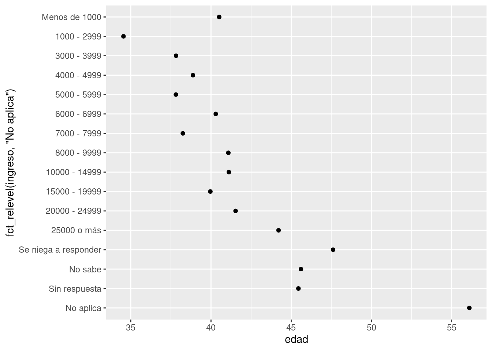

library(tidyverse)
library(datos)15 Factores
15.1 Introducción
En R, los factores se usan para trabajar con variables categóricas, es decir, variables que tienen un conjunto fijo y conocido de valores posibles. También son útiles cuando quieres mostrar vectores de caracteres en un orden no alfabético.
Históricamente, los factores eran más sencillos de trabajar que los caracteres. Como resultado, muchas de las funciones de R base automáticamente convierten los caracteres a factores. Esto significa que, a menudo, los factores aparecen en lugares donde no son realmente útiles. Afortunadamente, no tienes que preocuparte de eso en el tidyverse y puedes concentrarte en situaciones en las que los factores son genuinamente útiles.
15.1.1 Prerrequisitos
Para trabajar con factores, vamos a usar el paquete forcats, que es parte del tidyverse. Este paquete provee herramientas para lidiar con variables categóricas (¡y es un anagrama de factores en inglés!) y ofrece un amplio rango de ayudas para trabajar con factores.
15.1.2 Aprendiendo más
Si quieres aprender más sobre factores, te recomendamos leer el artículo de Amelia McNamara y Nicholas Horton, Wrangling categorical data in R (el nombre significa Domando/Manejando Datos Categóricos en R). Este artículo cuenta parte de la historia discutida en stringsAsFactors: An unauthorized biography (del inglés cadenasComoFactores: Una Biografía No Autorizada) y stringsAsFactors = <sigh> (del inglés cadenasComoFactores = <suspiro>), y compara las propuestas tidy para los datos categóricos demostrados en este libro, en comparación a los métodos de R base. Una versión temprana de este artículo ayudó a motivar y definir el alcance del paquete forcats. ¡Gracias Amelia y Nick!
15.2 Creando factores
Imagina que tienes una variable que registra meses:
x1 <- c("Dic", "Abr", "Ene", "Mar")Usar una cadena de caracteres (o string, en inglés) para guardar esta variable tiene dos problemas:
- Solo hay doce meses posibles y no hay nada que te resguarde de errores de tipeo:
x2 <- c("Dic", "Abr", "Eme", "Mar")- No se ordena de una forma útil:
sort(x1)[1] "Abr" "Dic" "Ene" "Mar"Puedes solucionar ambos problemas con un factor. Para crearlo, debes empezar definiendo una lista con los niveles válidos:
niveles_meses <- c(
"Ene", "Feb", "Mar", "Abr", "May", "Jun",
"Jul", "Ago", "Sep", "Oct", "Nov", "Dic"
)Ahora puedes crear un factor:
y1 <- factor(x1, levels = niveles_meses)
y1[1] Dic Abr Ene Mar
Levels: Ene Feb Mar Abr May Jun Jul Ago Sep Oct Nov Dicsort(y1)[1] Ene Mar Abr Dic
Levels: Ene Feb Mar Abr May Jun Jul Ago Sep Oct Nov DicCualquier valor no fijado en el conjunto será convertido a NA de forma silenciosa:
y2 <- factor(x2, levels = niveles_meses)
y2[1] Dic Abr <NA> Mar
Levels: Ene Feb Mar Abr May Jun Jul Ago Sep Oct Nov DicSi quieres una advertencia, puedes usar readr::parse_factor() (segmentar un factor, en inglés):
y2 <- parse_factor(x2, levels = niveles_meses)Warning: 1 parsing failure.
row col expected actual
3 -- value in level set EmeSi omites los niveles, se van a definir a partir de los datos en orden alfabético:
factor(x1)[1] Dic Abr Ene Mar
Levels: Abr Dic Ene MarA veces es preferible que el orden de los niveles se corresponda con su primera aparición en los datos. Puedes hacer esto cuando creas el factor, al definir los niveles con unique(x) único) o después con fct_inorder() (factores en orden):
f1 <- factor(x1, levels = unique(x1))
f1[1] Dic Abr Ene Mar
Levels: Dic Abr Ene Marf2 <- x1 %>% factor() %>% fct_inorder()
f2[1] Dic Abr Ene Mar
Levels: Dic Abr Ene MarSi alguna vez necesitas acceso directo al conjunto de niveles válidos, puedes hacerlo con levels() (niveles):
levels(f2)[1] "Dic" "Abr" "Ene" "Mar"15.3 Encuesta Social General
Por el resto del capítulo, nos vamos a concentrar en datos::encuesta. Esta es la versión traducida al español de un conjunto de datos de ejemplo de la General Social Survey, una encuesta realizada en Estados Unidos desde hace mucho tiempo, conducida por la organización de investigación independiente llamada NORC, en la Universidad de Chicago. La encuesta tiene miles de preguntas, así que en el conjunto de datos hemos seleccionado aquellas que ilustran algunos de los desafíos comunes que encontrarás al trabajar con factores.
encuesta# A tibble: 21,483 × 9
anio estado_civil edad raza ingreso partido religion denominacion horas_tv
<int> <fct> <int> <fct> <fct> <fct> <fct> <fct> <int>
1 2000 Nunca se ha… 26 Blan… 8000 -… Ind, p… Protest… Bautistas d… 12
2 2000 Divorciado 48 Blan… 8000 -… No fue… Protest… Bautista, n… NA
3 2000 Viudo 67 Blan… No apl… Indepe… Protest… No denomina… 2
4 2000 Nunca se ha… 39 Blan… No apl… Ind, p… Cristia… No aplica 4
5 2000 Divorciado 25 Blan… No apl… No fue… Ninguna No aplica 1
6 2000 Casado 25 Blan… 20000 … Fuerte… Protest… Bautistas d… NA
7 2000 Nunca se ha… 36 Blan… 25000 … No fue… Cristia… No aplica 3
8 2000 Divorciado 44 Blan… 7000 -… Ind, p… Protest… Sínodo lute… NA
9 2000 Casado 44 Blan… 25000 … No fue… Protest… Otra 0
10 2000 Casado 47 Blan… 25000 … Fuerte… Protest… Bautistas d… 3
# ℹ 21,473 more rows(Recuerda que como este conjunto de datos está provisto por un paquete, puedes obtener más información de las variables con ?encuesta.)
Cuando los factores están almacenados en un tibble no puedes ver sus niveles tan fácilmente. Una forma de verlos es con count() (contar):
encuesta %>%
count(raza)# A tibble: 3 × 2
raza n
<fct> <int>
1 Otra 1959
2 Negra 3129
3 Blanca 16395O con un gráfico de barras:
ggplot(encuesta, aes(raza)) +
geom_bar()
Por defecto, ggplot2 retira los niveles que no tienen valores. Puedes forzarlos para que se visualicen con:
ggplot(encuesta, aes(raza)) +
geom_bar() +
scale_x_discrete(drop = FALSE)
Estos niveles representan valores válidos que simplemente no tuvieron ocurrencias en este dataset. Para mostrarlos, en dplyr::count() agrega el argumento .drop con la opción FALSE.
encuesta %>%
count(raza,
.drop = FALSE)# A tibble: 4 × 2
raza n
<fct> <int>
1 Otra 1959
2 Negra 3129
3 Blanca 16395
4 No aplica 0Cuando se trabaja con factores, las dos operaciones más comunes son cambiar el orden de los niveles y cambiar sus valores. Estas operaciones se describen en las siguientes secciones.
15.3.1 Ejercicios
Explora la distribución de
ingreso. ¿Qué hace que el gráfico de barras por defecto sea tan difícil de comprender? ¿Cómo podrías mejorarlo?¿Cuál es la
religionmás común en esta encuesta? ¿Cuál es elpartidomás común?¿A qué
religionse aplica cadadenominacion? ¿Cómo puedes descubrirlo con una tabla? ¿Cómo lo puedes descubrir con una visualización?
15.4 Modificar el orden de los factores
A menudo resulta útil cambiar el orden de los niveles de factores en una visualización. Por ejemplo, imagina que quieres explorar el número promedio de horas consumidas mirando televisión por día, para cada religión:
resumen_religion <- encuesta %>%
group_by(religion) %>%
summarise(
edad = mean(edad, na.rm = TRUE),
horas_tv = mean(horas_tv, na.rm = TRUE),
n = n()
)
ggplot(resumen_religion, aes(horas_tv, religion)) + geom_point()Este gráfico resulta dificil de interpretar porque no hay un patrón general. Podemos mejorarlo al ordenar los niveles de religion usando fct_reorder() ( reordenar factores). fct_reorder() requiere tres argumentos:
f, el factor cuyos niveles quieres modificar.x, un vector numérico que quieres usar para reordenar los niveles.- Opcionalmente,
fun, una función que se usa si hay múltiples valores dexpara cada valor def. El valor por defecto esmedian(mediana).
ggplot(resumen_religion, aes(horas_tv, fct_reorder(religion, horas_tv))) +
geom_point()
Reordenar la columna religión (religion) hace que sea más sencillo ver que las personas en la categoría “No sabe” ven más televisión, mientras que “Hinduismo” y “Otra religión oriental” ven mucho menos.
Cuando haces transformaciones más complicadas, recomendamos que las remuevas de aes() hacia un paso de transformación separado usando mutate(). Por ejemplo, puedes reescribir el gráfico anterior de la siguiente forma:
resumen_religion %>%
mutate(religion = fct_reorder(religion, horas_tv)) %>%
ggplot(aes(horas_tv, religion)) +
geom_point()¿Qué sucede si creamos un gráfico para observar cómo varía la edad promedio para cada ingreso reportado?
resumen_ingreso <- encuesta %>%
group_by(ingreso) %>%
summarise(
edad = mean(edad, na.rm = TRUE),
horas_tv = mean(horas_tv, na.rm = TRUE),
n = n()
)
ggplot(resumen_ingreso, aes(edad, fct_reorder(ingreso, edad))) + geom_point()
En ete caso, ¡reordenar los niveles arbitrariamente no es una buena idea! Eso es porque ingreso ya tiene un orden basado en un principio determinado, con el cual no deberíamos meternos. Reserva fct_reorder() para factores cuyos niveles están ordenados arbitrariamente.
Sin embargo, sí tiene sentido mover “No Aplica” al frente, junto a los otros niveles especiales. Puedes usar fct_relevel() (cambiar niveles). Esta función recibe como argumento un factor, f y luego cualquier número de niveles que quieras mover al principio de la línea.
ggplot(resumen_ingreso, aes(edad, fct_relevel(ingreso, "No aplica"))) +
geom_point()
¿Por qué crees que la edad promedio para “No aplica” es tan alta?
Es otro el tipo de reordenamiento que resulta útil cuando estás coloreando las líneas de un gráfico. fct_reorder2() reordena el factor mediante los valores y asociados con los valores x más grandes. Esto hace que el gráfico sea más sencillo de leer, porque los colores de líneas se ajustan con la leyenda.
por_edad <- encuesta %>%
filter(!is.na(edad)) %>%
count(edad, estado_civil) %>%
group_by(edad) %>%
mutate(prop = n / sum(n))
ggplot(por_edad, aes(edad, prop, colour = estado_civil)) +
geom_line(na.rm = TRUE)ggplot(por_edad, aes(edad, prop, colour = fct_reorder2(estado_civil, edad, prop))) +
geom_line() +
labs(colour = "estado_civil")
Finalmente, para los gráficos de barra puedes usar fct_infreq() (frecuencia incremental de factores) para ordenar los niveles incrementalmente según su frecuencia: este es el ordenamiento más sencillo porque no requiere de variables adicionales. Puedes querer combinarlo con fct_rev() (invertir factores).
encuesta %>%
mutate(estado_civil = estado_civil %>% fct_infreq() %>% fct_rev()) %>%
ggplot(aes(estado_civil)) +
geom_bar()
15.4.1 Ejercicios
Hay algunos números sospechosamente grandes en
horas_tv. ¿Es la media un buen resumen?Identifica para cada factor en
encuestasi el orden de los niveles es arbitrario o responde a algún principio.¿Por qué mover “No aplica” al inicio de los niveles lo llevó al final del gráfico?
15.5 Modificar los niveles de los factores
Más poderoso que cambiar el orden de los niveles es cambiar sus valores. Esto te permite clarificar etiquetas para publicación y colapsar niveles para visualizaciones de alto nivel. La herramienta más general y más poderosa es fct_recode() (recodificar factores). Esta función te permite recodificar o cambiar el valor de cada nivel. Por ejemplo, toma la columna encuesta$partido:
encuesta %>% count(partido)# A tibble: 10 × 2
partido n
<fct> <int>
1 Sin respuesta 154
2 No sabe 1
3 Otro partido 393
4 Fuertemente republicano 2314
5 No fuertemente republicano 3032
6 Ind, pro rep 1791
7 Independiente 4119
8 Ind, pro dem 2499
9 No fuertemente demócrata 3690
10 Fuertemente demócrata 3490Los niveles son concisos e inconsistentes. Modifiquémoslos un poco para que sean más largos y para poder usar una construcción paralela.
encuesta %>%
mutate(partido = fct_recode(partido,
"Republicano duro" = "Fuertemente republicano",
"Republicano moderado" = "No fuertemente republicano",
"Independiente pro republicano" = "Ind, pro rep",
"Independiente pro demócrata" = "Ind, pro dem",
"Demócrata moderado" = "No fuertemente demócrata",
"Demócrata duro" = "Fuertemente demócrata"
)) %>%
count(partido)# A tibble: 10 × 2
partido n
<fct> <int>
1 Sin respuesta 154
2 No sabe 1
3 Otro partido 393
4 Republicano duro 2314
5 Republicano moderado 3032
6 Independiente pro republicano 1791
7 Independiente 4119
8 Independiente pro demócrata 2499
9 Demócrata moderado 3690
10 Demócrata duro 3490fct_recode() no modificará los niveles que no han sido mencionados explícitamente y te advertirá si accidentalmente te refieres a un nivel que no existe.
Para combinar grupos, puedes asignar múltiples niveles viejos al mismo nivel nuevo:
encuesta %>%
mutate(partido = fct_recode(partido,
"Republicano duro" = "Fuertemente republicano",
"Republicano moderado" = "No fuertemente republicano",
"Independiente pro republicano" = "Ind, pro rep",
"Independiente pro demócrata" = "Ind, pro dem",
"Demócrata moderado" = "No fuertemente demócrata",
"Demócrata duro" = "Fuertemente demócrata",
"Otro" = "Sin respuesta",
"Otro" = "No sabe",
"Otro" = "Otro partido"
)) %>%
count(partido)# A tibble: 8 × 2
partido n
<fct> <int>
1 Otro 548
2 Republicano duro 2314
3 Republicano moderado 3032
4 Independiente pro republicano 1791
5 Independiente 4119
6 Independiente pro demócrata 2499
7 Demócrata moderado 3690
8 Demócrata duro 3490Debes usar esta técnica con cuidado: si agrupas categorías que son realmente diferentes, obtendrás resultados confusos y/o engañosos.
Si quieres colapsar muchos niveles, fct_collapse() (colapsar factores) es una variante muy útil de fct_recode(). Para cada nueva variable puedes proveer un vector de niveles viejos:
encuesta %>%
mutate(partido = fct_collapse(partido,
otro = c("Sin respuesta", "No sabe", "Otro partido"),
republicano = c("Fuertemente republicano", "No fuertemente republicano"),
independiente = c("Ind, pro rep", "Independiente", "Ind, pro dem"),
demócrata = c("No fuertemente demócrata", "Fuertemente demócrata")
)) %>%
count(partido)# A tibble: 4 × 2
partido n
<fct> <int>
1 otro 548
2 republicano 5346
3 independiente 8409
4 demócrata 7180A veces, simplemente quieres agrupar todos los grupos pequeños para simplificar un gráfico o tabla. Ese es un trabajo para fct_lump() (agrupar factores):
encuesta %>%
mutate(religion = fct_lump(religion, other_level = "Otra")) %>%
count(religion)# A tibble: 2 × 2
religion n
<fct> <int>
1 Protestante 10846
2 Otra 10637El comportamiento por defecto es agrupar los grupos pequeños de forma progresiva, asegurando que la agregación continúa siendo el grupo más pequeño. En este caso, esto no resulta demasiado útil: es cierto que la mayoría de los estadounidenses en esta encuesta son protestantes, pero probablemente hemos colapsado en exceso.
En cambio, podemos usar el parámetro n para especificar cuántos grupos (excluyendo otros) queremos colapsar:
encuesta %>%
mutate(religion = fct_lump(religion, n = 10, other_level = "Otra")) %>%
count(religion, sort = TRUE) %>%
print(n = Inf)# A tibble: 10 × 2
religion n
<fct> <int>
1 Protestante 10846
2 Católica 5124
3 Ninguna 3523
4 Cristiana 689
5 Otra 458
6 Judía 388
7 Budismo 147
8 Inter o no confesional 109
9 Musulmana/Islam 104
10 Cristiana ortodoxa 9515.5.1 Ejercicios
¿Cómo han cambiado en el tiempo las proporciones de personas que se identifican como demócratas, republicanas e independientes?
¿Cómo podrías colapsar
ingresoen un grupo más pequeño de categorías?